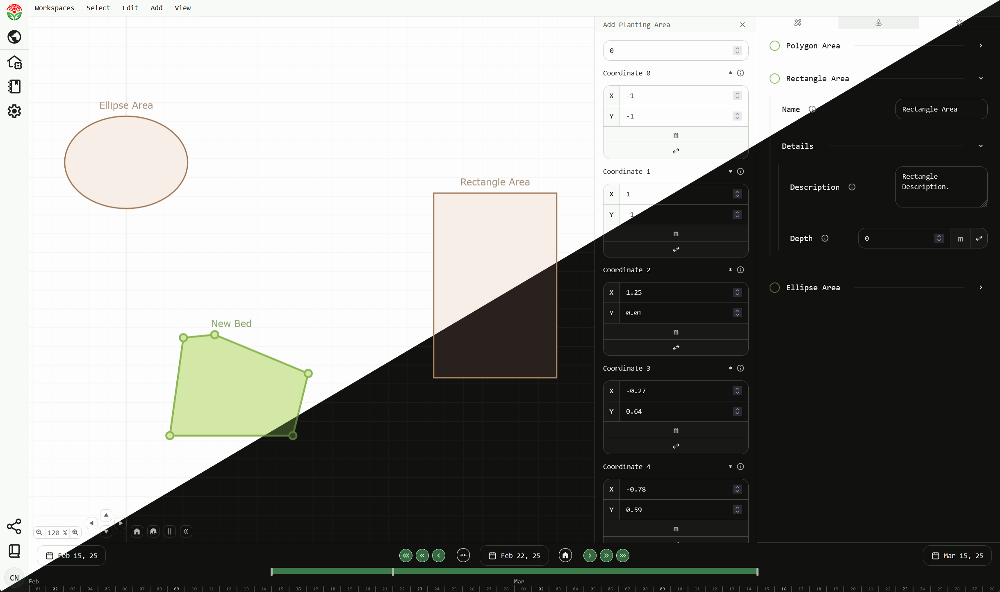

Verdagraph - Garden Productivity Tool, Agro-ecology Model, and IoT platform.
Verdagraph is an open source project seeking to provide tools that make it easier to collaboratively plan, track, optimize, and automate agro-ecological systems at any scale. It is best summarized as a fusion between:
-
Garden Productivity Engine: At its core, Verdagraph is a garden productivity tool which can be used to assist in planning and tracking agricultural systems. Verdagraph allows the modelling of individual plants and their lifecycles within spatial constraints, serving as a digital representation of cultivation.
-
Agro-Ecology Optimization Model: The productivity model is extended to encompass metrics relevant to the sustainability of agriculture systems, including biodiversity, habitat, climate, nutrient and water cycles, and more. These metrics can then be used to shift productivity towards a holistic model of ecological health, allowing for the optimization of these systems to produce the desired quantity and diversity of food within a framework of ecological integration.
-
IoT Automation Suite: The model required to achieve these goals becomes more effective the easier it is to supply data as input and execute outputs in the world. Thus, the goal is to follow an internet-of-things approach to connecting the model with external devices and automating the process of obtaining input data and executing output tasks. Input devices include weather services, temperature, moisture, and rainfall sensors, and images paired with computer vision. Output devices include irrigation controllers and robotic farming equipment.
In short, the goal of Verdagraph is to create tools which:
-
Minimize the knowledge and cognitive load required to plan, track, optimize, and automate agro-ecological systems at any scale.
-
Transfer the co-creation of ecological knowledge into digital models made freely accessible to contextualized application.
-
Facilitate the horizontal organization of human labour through collaborative systems.
-
Ultimately enhance our adaptive capacity towards a sustainable agriculture system by putting the means of agro-ecological production and innovation into the hands of everyone.
Verdagraph is still in a very early stage of development. The repository hosting the resources for this project can be found here.
Here's a screenshot of a page in the application used to create and modify geometries which represent planting areas / garden beds.
